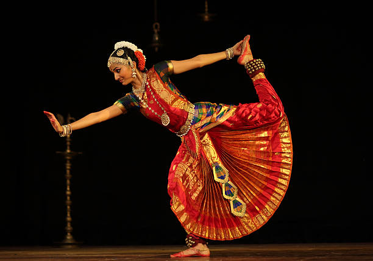

BharatanatyamThe Graceful Dance of Tamil Nadu |
|  |
About Bharatanatyam:Bharatanatyam is a classical dance form from Tamil Nadu, characterized by intricate footwork, graceful movements, and vivid expressions. Originally performed in temples, it narrates stories of devotion, mythology, and spirituality. |